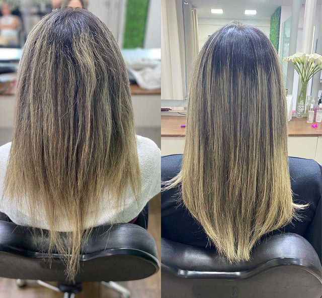
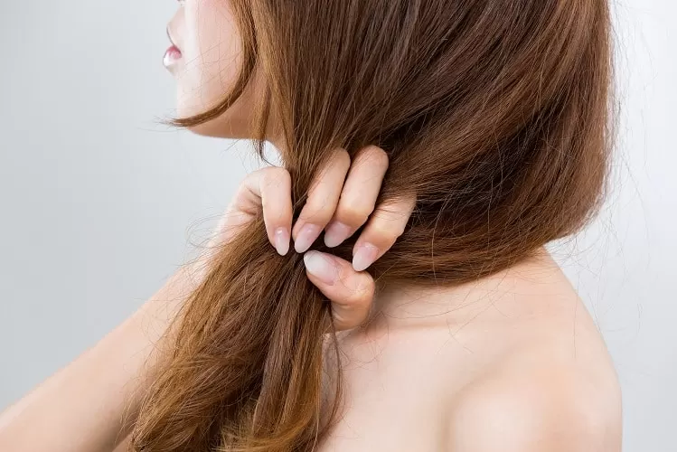

♥ O que é corte químico? ♥
O corte químico acontece quando o cabelo se parte ao meio, como se tivesse sido cortado e, em geral, isso ocorre em razão de procedimentos agressivos que destroem a fibra capilar ou da utilização de componentes químicos que não combinam entre si.
Um exemplo que pode gerar corte químico é a mistura da amônia, presente nos descolorantes, com hidróxidos, substância presente em muitos tratamentos que alisam os cabelos. Por isso, quando uma pessoa alisa os cabelos com frequência e, logo após, os descolore, há a possibilidade de os fios ficarem muito fracos, e o corte químico pode acontecer.
♥ Sintomas do corte químico: ♥
•Os fios ficam opacos, ásperos e porosos.
•Os cabelos ainda podem ficar com pontas duplas e até mesmo triplas.
•Eles se quebram com facilidade e, nos casos mais graves, pode até haver queda.
•Ficam elásticos, com o famoso efeito “emborrachado”. Ao puxar o fio, ele estica como um elástico e, quando é solto, não volta ao normal.

♥ Como tratar do cabelo que sofreu o corte químico? ♥
•Dê uma boa pausa nos procedimentos químicos. Os fios já estão bastante danificados e repetir a dose pode piorar ainda mais a situação.
•Corte os cabelos para diminuir os danos visíveis. Tirar algumas pontinhas já pode ajudar a melhorar seu aspecto.
•Invista em um cronograma capilar em casa para proporcionar hidratação, nutrição e reconstrução ao cabelo, devolvendo todos os nutrientes que os fios precisam.
•A umectação com óleos vegetais também pode ajudar bastante na recuperação do cabelo. Você pode fazê-la tanto durante o dia quanto à noite, antes de dormir (também conhecida como umectação noturna).
•Evite ao máximo usar secador, chapinha e modelador de cachos durante esse período de recuperação. Essas ferramentas de calor agridem ainda mais o cabelo que já está fragilizado.

♥ Como evitar o corte químico? ♥
•O primeiro passo é conhecer bem o tipo de química que já existe nos seus fios além da química que será aplicada. O cabeleireiro também deverá fazer uma avaliação nos fios para constatar se os fios resistirão ao novo clareamento ou alisamento, por exemplo.
•Faça o teste de mecha nos fios. Ele consiste na aplicação do produto em uma mecha dos fios cerca de 48 horas antes da aplicação em todo o comprimento. Dessa forma, é possível saber se os fios irão aguentar uma nova química ou não.
•Dê um intervalo de meses entre uma química e outra. Nesse meio tempo, invista em máscaras hidratantes, nutritivas e reconstrutoras para recuperar os cabelos.
•Escolha um profissional de confiança, que conheça a química que você já possui nos cabelos. Se você não tem experiência, não faça descolorações ou alisamentos em casa.